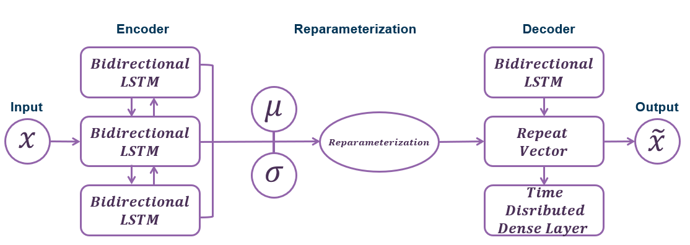
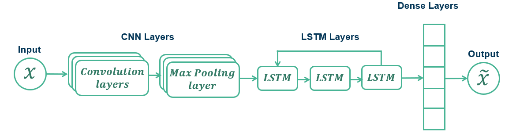
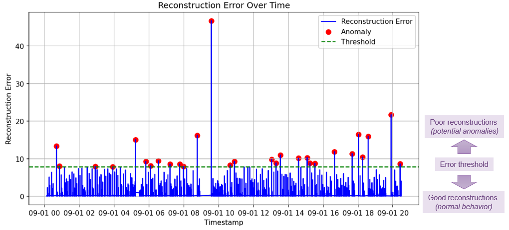
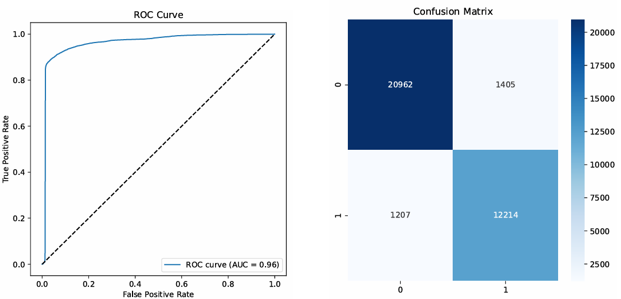
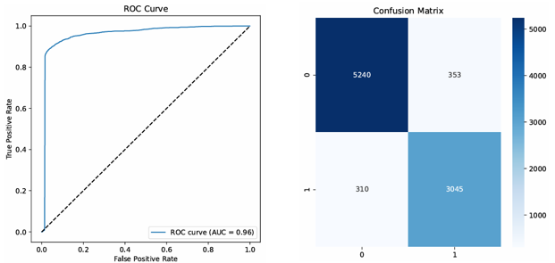

Machine Learning & Anomaly Detection at the Spallation Neutron Source Accelerator
Co-Authored with Arun Thakur 1 , Ashish Verma 2 for ODU's Masters Capstone ProjectScope
The Spallation Neutron Source (SNS) at Oak Ridge National Laboratory is a world-leading facility for neutron scattering research, providing insights into the structure and dynamics of materials. As a complex and high-throughput scientific instrument, the ability to detect anomalies in these systems promptly and accurately is critical for ensuring experimental integrity, maintaining uptime, and protecting equipment.
This report explores the application of machine learning (ML) techniques for anomaly detection within the SNS environment. By leveraging historical sensor data, waveform signals, and system logs, machine learning models—especially those using deep learning architectures—offer the potential to identify subtle, non-obvious deviations from normal operational patterns. These methods can supplement or even surpass traditional rule-based monitoring by learning complex patterns and adapting to system evolution over time. The scope of this investigation includes the selection of appropriate algorithms, data preprocessing strategies, model evaluation metrics, and integration considerations within the SNS control infrastructure.
High Level Architecture
VAE-BiLSTM
Overview
VAE-BiLSTM is a hybrid deep learning architecture that combines:
- Variational Autoencoder (VAE) for learning compressed latent representations.
- Bidirectional LSTM (BiLSTM) for modeling temporal dependencies in sequential data.
Architecture Breakdown
1. Variational Autoencoder (VAE)
Purpose:
- Learns the underlying distribution of the input data.
- Encodes inputs into a latent space, allowing reconstruction of normal patterns.
Loss Function:
ℒ_VAE = Reconstruction Loss + β · KL Divergence
2. Bidirectional LSTM (BiLSTM)
Purpose: Captures temporal dependencies in both directions.
Combined VAE-BiLSTM Flow
Input Sequence
│
Encoder (μ, σ)
│
Reparameterization Trick
│
Latent Vector z
│
Decoder
│
Reconstructed Sequence
│
BiLSTM
│
Anomaly Score
Anomaly Detection Strategy
- Train the model on normal data.
- During inference, compute:
- Reconstruction error
- Latent distance
- Sequence-based anomaly score
Loss Function
loss = reconstruction_loss + beta * kl_loss + sequence_loss
CNN-LSTM
Data Analysis
The September 2024 data from the SNS comprised multiple sources collected across different subsystems, primarily focusing on the Differential Current Monitor (DCM) and Beam Position Monitor (BPM) channels. These datasets are currently housed separately, thus preprocessing and integration pipeline was established to prepare the dataset for downstream anomaly detection modeling.
Parsing Binary Format Data Raw data files were originally stored in a custom binary and to extract the information, a dedicated parser was implemented using Python provided by the Jefferson Lab. The parser decoded binary streams into structured arrays, each associated with timestamps, signal amplitudes, and relevant metadata such as channel IDs and acquisition parameters.
Merging DCM and BPM Data After successful parsing, DCM and BPM datasets were merged based on their timestamp alignment. As the data rates and acquisition intervals differed slightly between systems, time-series interpolation and resampling techniques were applied to synchronize the signals. A unified schema was defined wherein each data point represented a composite snapshot of DCM and BPM values for a given moment in time. This merge allowed the model to capture correlations between beam behavior (BPM) and system drift (DCM), enriching the feature space for more accurate anomaly detection.
Subsampling Data Once the data was merged into a single dataset, the team had decided to work with a subset of the data, given the short time parameter of the semester. By looking at the timestamps of the tracings, the file were grouped if the BPM settings matched the previous file. If there was a change in any of the beam settings, which was often done for fine tuning the beam, it was treated as a new grouping of tracing files. For the use of the this report and analysis, the first group of settings in September 2024 was used, giving over 1,400 files to utilize for the training and testing.
Addressing Class Imbalance with SMOTE An initial analysis of the labeled dataset revealed a significant class imbalance, with anomalous instances representing a small fraction of the total records. To mitigate this, the Synthetic Minority Over-sampling Technique (SMOTE) was applied. SMOTE synthetically generates new samples for the minority class by interpolating between existing examples. This was executed after merging and normalization to ensure data compatibility. The resulting dataset maintained a more balanced class distribution, which helped improve model generalization and reduced the bias toward the majority (normal) class during training.
This preprocessed and augmented dataset forms the foundation for subsequent model training and evaluation, enabling more robust detection of subtle and rare anomalies within the SNS operational environment.Current Model Architecture
| VAE-BiLSTM | CNN-LSTM |
|---|---|
|
|
Results
VAE-BiLSTM
CNN-LSTM
 Pros and Cons
| Pros | Cons | |
|---|---|---|
| VAE-BiLSTM |
|
|
| CNN-LSTM |
|
|
Future Enhancements
- Model Refinement – One key feature that could be done for refining the model is opening up the amount of data that is fed into them. This increased amount of data would hopefully be able to account for the nuances that exist within the data and ultimately produce a better model. For both of the models, there are parameters that could be adjusted and would change the resulting weights and outcomes. Given more time, the team would have developed additional code that could optimize the various parameters to produce the best model that it could with the data.
- Real-time Deployment – The ultimate goal of the this research is the develop a model that can assist in detecting the errant beams at the SNS. If after refining the model showcased results that aligned with Oak Ridge's requirements, the models could be implemented into their processes and be used in day-to-day operations.
References
- Staffini et al. (2023). A Disentangled VAE-BiLSTM Model for Heart Rate Anomaly Detection. Bioengineering
- Zhao et al. (2021). KPI Anomaly Detection Based on VAE and SVDD. Symmetry
- Abdallah et al. (2021). CNN-LSTM Anomaly Detection for SDNs. ARES '21